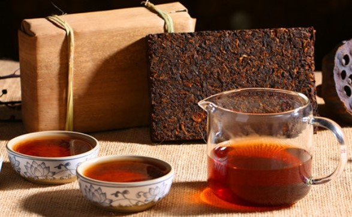
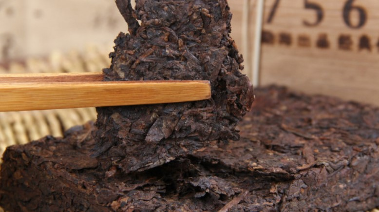
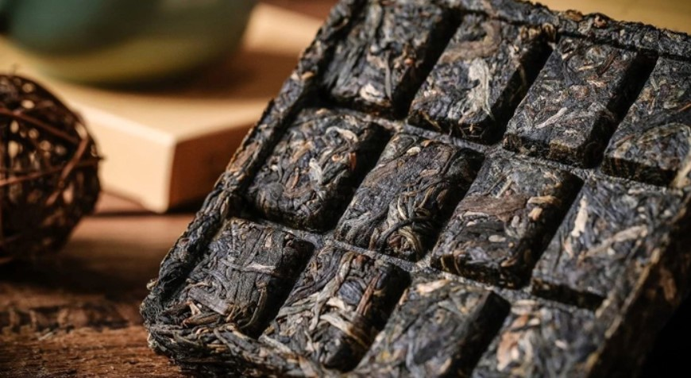
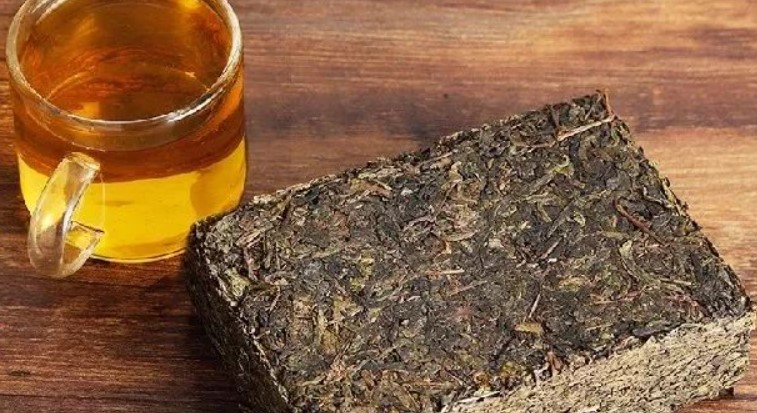

普洱茶砖
普洱茶是历史以来形成的云南特有的地方名茶，古代为了方便运输常将普洱茶制成各种形状，其中块状的就被称为普洱砖茶。
产生
茶砖出现于光绪年间，很多产茶地开始制作砖茶。由于从前茶农交给晋商的散装品，体积大，重量轻，运输不便，且需将茶叶装入竹篓，踩压结实后，再行载运，颇有耗损。为了适应茶商的要求，而出现了砖茶生产。最早出现的茶砖，始自光绪初年，其压制法极为幼稚简单，一般都是人工压制。从光绪四年(1878)以后，晋商们在砖茶的制作中逐渐采用了水力压机和蒸汽机加工砖茶。这种制造砖茶方法简单有效便于操作。可以说西方的先进工业技术，最早在我国出现，就是因为茶叶贸易带来的，作为一段历史的纪录，茶砖真实的表现了清代我国对外贸易的历史面貌，以及近代科技在我国的发展演变过程。
制作工艺
所有的砖茶都是蒸压成型，但成型方式有所不同。如黑砖、花砖、茯砖、青砖、米砖茶是用机压成型；康砖茶则是用棍锤筑造成型。在砖茶的压制技术中，汽蒸沤堆是芙砖压制中特有工序，同时它还有一个特殊的过程，即让黄霉菌在其上面生长，俗称“发金花”。茯砖茶以有较多的金黄色的霉花为上品，霉花越多质量越好。
鉴别
一、 首先从外型看来条索细长，条形较完整，应是4—5级毛茶底料，干茶色泽棕褐色，散发少许油光，闻起来干茶有樟香，所以气味稍带生刺味，茶砖边缘有风化迹象，量为250克。
二、 鉴别普洱茶品质最重要的依据是开汤试泡，主要是观汤色品滋味，看叶底。从茶砖上取下约10克样冲泡。
1、 汤色显粟色，较清澈，茶汤透气，有极少微小悬浮物
2、 茶汤口感有明显樟香味，略带涩感，茶汤爽滑，回甘明显，生津强，水性稍薄
3、 叶底色泽暗褐，较匀亮，花束较少，叶质较柔软，捏起来有弹性。